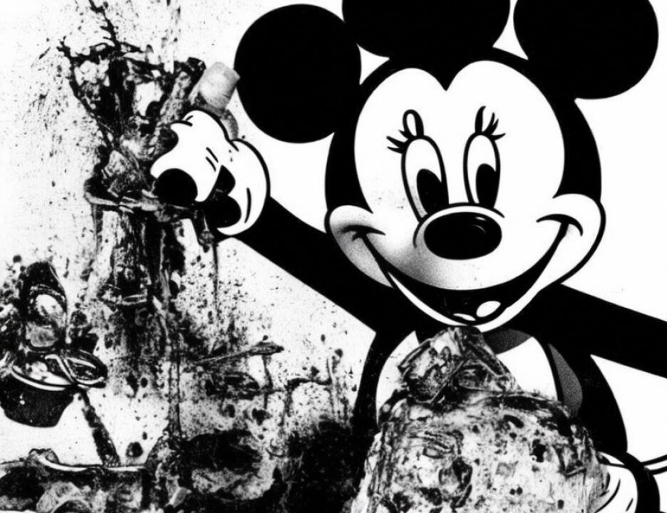

1 A. That's correct.
2 Q. He doesn't have the same qualifications you do, isn't that
3 correct?
4 A. That's correct.
5 Q. That's why they flew you over to Kenya because you have
6 this expertise, right?
7 A. Yes, sir.
8 Q. So until you got there no one was really conducting the
9 investigation from the same particular perspective of
10 expertise that you have, isn't that correct?
11 A. Perhaps with my depth of knowledge, but there were other
12 FBI personnel that were on the scene who had knowledge of
13 bombing investigations.
14 Q. Well, is it a fact that when you flew over you came over
15 with a whole team of experts?
16 A. I came over actually with a very small crew. The team
17 followed behind me, maybe by about eight hours or so.
18 Q. But all of the experts were being flown in, isn't that
19 correct?
20 A. Yes, for the most part, yes.
21 Q. Is it also true that you couldn't go close to the embassy
22 itself because the rescue and recovery operations were still
23 going on when you arrived and you said I believe on direct
24 that you started on a very far away perimeter and worked your
25 way in, isn't that correct?
2249
1 A. I actually went on to the rubble pile the day I arrived.
2 I looked at that, surveyed it and then directed personnel to
3 other locations.
4 Q. Took pictures of it?
5 A. I did not personally take pictures of it, but photographs
6 were being taken.
7 Q. Were you directing people at that point in terms of the
8 rescue and recovery operation as to perhaps putting rubble
9 that they moved in a particular place or was that not a
10 concern at all?
11 A. My concern was to stay out of their way, let them do their
12 job and be there to observe.
13 Q. Now, when you -- withdrawn. When there is in fact a
14 rescue operation, rescue-recovery operation, as you said, the
15 rubble is just being tossed around, right?
16 A. Yes.
17 Q. And things are being tossed around and there may be some
18 particular items which you would make a conclusion on that had
19 been moved that you didn't particularly find in the place
20 where they were, isn't that a fact?
2